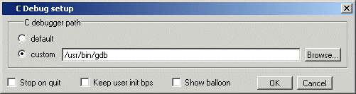

Before viewing
your SystemC/C/C++ source code, you must set up the C Debug path
and options.
Procedure
- Compile and link your C code
with the -g argument to sccom (to create debug symbols) and without
‑O (or any other optimization switches you normally use). See SystemC Simulation for information on compiling and linking
SystemC code. Refer to the chapter Verilog Interfaces to C for information on compiling and
linking C code.
- Specify the path to the gdb
debugger by selecting
Figure 1. Specifying Path in
C Debug setup Dialog
Select either:
- Start the debugger by selecting . Questa SIM will
start the debugger automatically if you set a breakpoint in a SystemC
file.
- If you are not using gcc,
or otherwise have not specified a source directory, specify a source
directory for your C code with the following command:
gdb dir <srcdirpath1>[:<srcdirpath2>[...]]